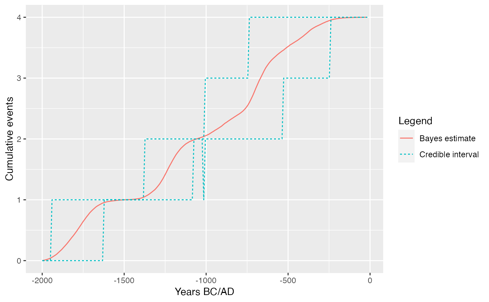
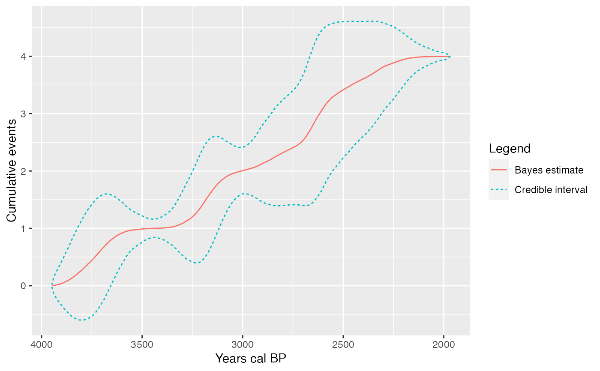

A statistical graphic designed for the archaeological study of rhythms of the long term that embodies a theory of archaeological evidence for the occurrence of events
tempo(object, ...) # S4 method for MCMC tempo( object, level = 0.95, count = TRUE, gauss = FALSE, elapsed = FALSE, origin = 1, time = range(object), n = 50 * ncol(object) ) # S4 method for CumulativeEvents,missing plot(x, calendar = c("BCAD", "BP"))
| object | An |
|---|---|
| ... | Currently not used. |
| level | A length-one |
| count | A |
| gauss | A |
| elapsed | A |
| origin | A length-one |
| time | A length-two |
| n | An |
| x | A |
| calendar | A |
The tempo plot is one way to measure change over time: it estimates the cumulative occurrence of archaeological events in a Bayesian calibration. The tempo plot yields a graphic where the slope of the plot directly reflects the pace of change: a period of rapid change yields a steep slope and a period of slow change yields a gentle slope. When there is no change, the plot is horizontal. When change is instantaneous, the plot is vertical.
Dye, T. S. (2016). Long-term rhythms in the development of Hawaiian social stratification. Journal of Archaeological Science, 71: 1-9. doi: 10.1016/j.jas.2016.05.006 .
Other events:
activity(),
occurrence()
A. Philippe, M.-A. Vibet, T. S. Dye, N. Frerebeau
# \donttest{ ## Coerce to MCMC events <- as_mcmc(Events, iteration = 1) events <- events[1:10000, ] ## Tempo plot tempo1 <- tempo(events) plot(tempo1)# }